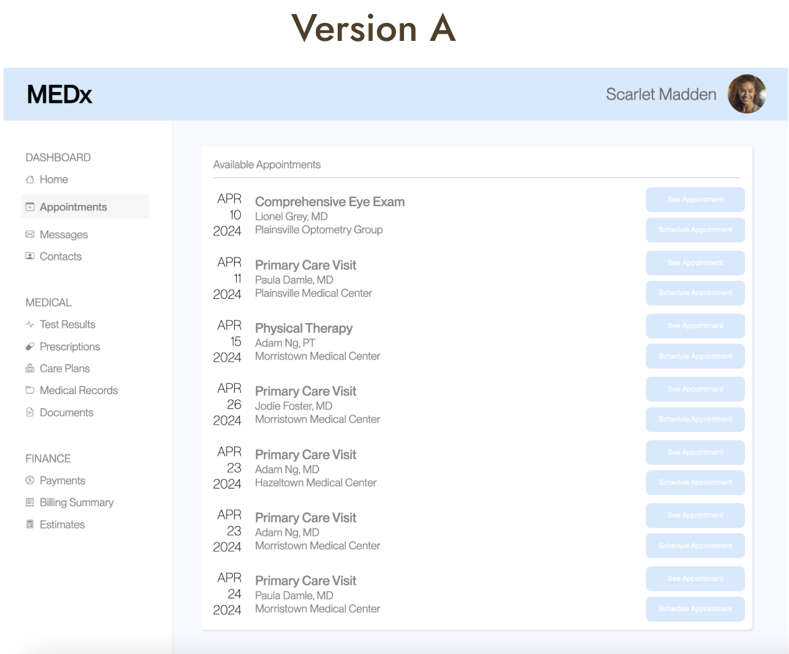
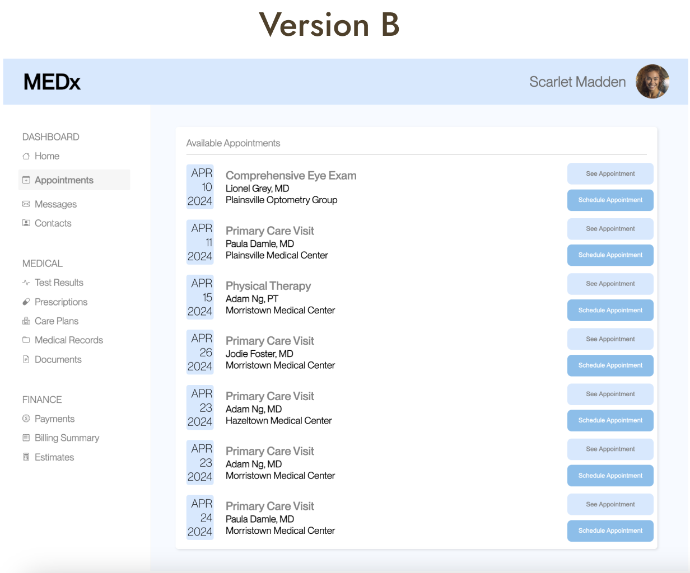

In an attempt to evaluate the effectiveness of MEDx's appointment management page, an A/B test is
conducted to advise potential visual updates in hopes of achieving a smoother user experience when
navigating the page.
MY ROLE
Responsible for proposing and implementing new designs & conducting A/B testing.
TIMELINE
March 2024
THE DESIGNS:


MODIFIED FEATURES
More distinguishable styling on the appointment buttons
Added a background colour on the dates
Black and bolded font on the “name” and “location”
User Task:
Schedule an appointment with Adam Ng, MD at Morristown Medical Center on April 23, 2024
HYPOTHESIS FOR EACH METRIC
❌ Misclick Rate
Definition:the frequency with which users click something else on the page before finding the correct button for the task
Null Hypothesis
The misclick rate in version A is the same as the misclick rate in version B
Alternative Hypothesis
The misclick rate in version B is lower than the misclick rate in version A because the
“See Appointment” & “Schedule Appointment” buttons are different colours.
Prediction: We will end up rejecting the null hypothesis because version B’s buttons are more visually accessible and easier to differentiate, leading to lower misclicks.
⏳ Time on Page
Definition:the time spent on the webpage for each user group before completing the task
Null Hypothesis
The time spent on version A is the same as the time spent on version B
Alternative Hypothesis
The time spent on version B is lower than the time spent on version
A because the additional colour blocks help highlight different important information, leading to faster navigation times.
Prediction: We will end up rejecting the null hypothesis because version B’s layout is more differentiable, allowing the user to understand and access necessary information faster.
👆🏻 Number of Clicks
Definition:Total number of clicks made by each user group
Null Hypothesis
The number of clicks in version A is the same as the number of clicks in version B
Alternative Hypothesis
The number of clicks in version B is lower than the number of clicks in version A because the buttons are highlighted and differentiated,
allowing the user to complete their task with minimal clicks.
Prediction: We will end up rejecting the null hypothesis because version B’s “Schedule Appointment” button is more visible, allowing the user to target it more quickly without having to click around to figure out the navigations.
Running Statistical Tests on the data
Example CSV data:
{
time_on_page: total time in milliseconds;
num_clicks: the number of times user clicked on the screen;
did_misclick: boolean flag for user clicking a button external to the task;
}
❌ Misclick Rate
A Chi-Square test was conducted on the dataset as we are evaluating categorical data. From the data,
version A had 7 misclicks out of 34 and version B had 1 misclick out of 28. After performing a Chi-Square test, the resulting values are:
Degrees of Freedom: 1
Chi-square (χ2): 3.956
p-value: 0.0466
From the values, a high chi-square value of 3.956 indicates that there is a discrepancy between the observed and expected values.
Since the expected values are calculated under the assumption of the null hypothesis, a high discrepancy indicates that the dataset does not align with the null hypothesis.
A p-value of 0.0466 (which is lower than 0.05) suggest strong evidence against the null hypothesis. Therefore, with the values above,
we will reject the null hypothesis that the misclick rate is the same for versions A and B.
Summary Statistics
Version A
# of misclicks: 7
# of correct clicks: 27
Mean: 0.259
Mode: FALSE
Version B
# of misclicks: 1
# of correct clicks: 27
Mean: 0.143
Mode: FALSE
From the summary statistics, version A has an overall higher misclick rate than version B,
which could suggest that the changes made to version B helped reduce the misclick rate.
However, version A had a large sample size (34) whereas version B only had 28. This means that although the data suggests a lower misclick rate in B,
it is still insufficient evidence to conclude that the difference is due to the visual changes.
⏳ Time on Page
A one-tailed T test was conducted on the dataset as we are evaluating the data with a directional hypothesis in mind (time spent on B is lower than A).
After performing the T-test, the resulting values are:
Degrees of Freedom: 59.973
T-score (A-B) : 0.971
p-value: 0.832
From the values, the t-score (which measures the mean between A & B differ relative to the variation) is 0.971, which indicates that the mean time spent on A is
0.971 standard errors greater than the mean time spent on B. The p-value calculated from the t-score is 0.832. Since our hypothesis is that time spent on B is
less than A, our p-value relative to our hypothesis would be 0.163. Since the p-value is not less than the significance value (0.05), we
fail to reject the null hypothesis since the discrepancy is statistically insignificant.
From the summary statistics, version A has higher statistics across all values compared to version B, indicating that the overall time spent on page for
version A is higher than B. However, since we failed to reject the null hypothesis, the different is not statistically significant enough to indicate
that the time spent on version B is less than A.
👆🏻 Number of Clicks
A one-tailed T test was conducted on the dataset as we are evaluating the data with a directional hypothesis in mind (number of clicks in B is less than A).
After performing the T-test, the resulting values are:
Degrees of Freedom: 40.932
T-score (A-B) : 1.266
p-value: 0.894
From the values, the t-score is 1.266, which indicates that the number of clicks in A is 1.266 standard errors greater than the number of clicks in B.
The p-value calculated from the t-score is 0.894. Since our hypothesis is that the number of clicks in B is less than A, our p-value relative to our
hypothesis would be 0.106. Since the p-value is not less than the significance value (0.05),
we fail to reject the null hypothesis since the discrepancy is statistically insignificant.
Summary Statistics
Version A
Average: 3.088
Variance: 8.749
Median: 2
Mode: 2
Version B
Average: 2.407
Variance: 0.866
Median: 2
Mode: 2
From the summary statistics, version A has a higher average compared to version B, meaning that on average, the users clicked more times in A than B before completing the task.
From the variance values, we can also see that the number of clicks deviated less from the average in version B, indicating that it was more common for users to complete the
task with minimal clicks in version B.
CONCLUSION
Out of the 3 metrics, we reject the null hypothesis in misclick rate and fail to reject the null hypothesis
in time spent on page & number of clicks. Therefore, the modifications made to version B have demonstrated to
be partially successful in improving the user experience. However, more sufficient evidence would be needed to
support the alternative hypotheses.